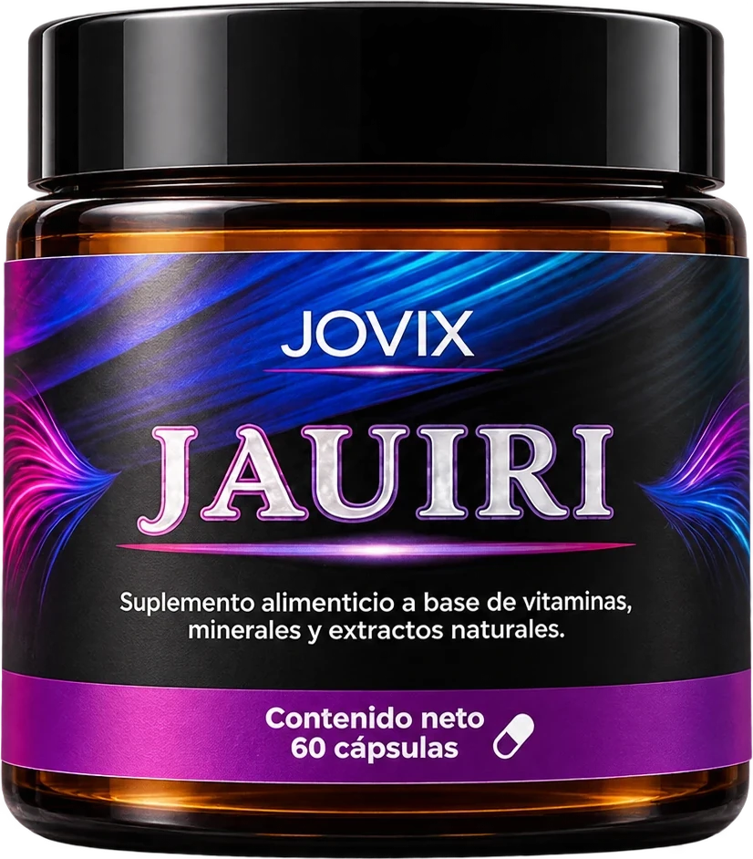
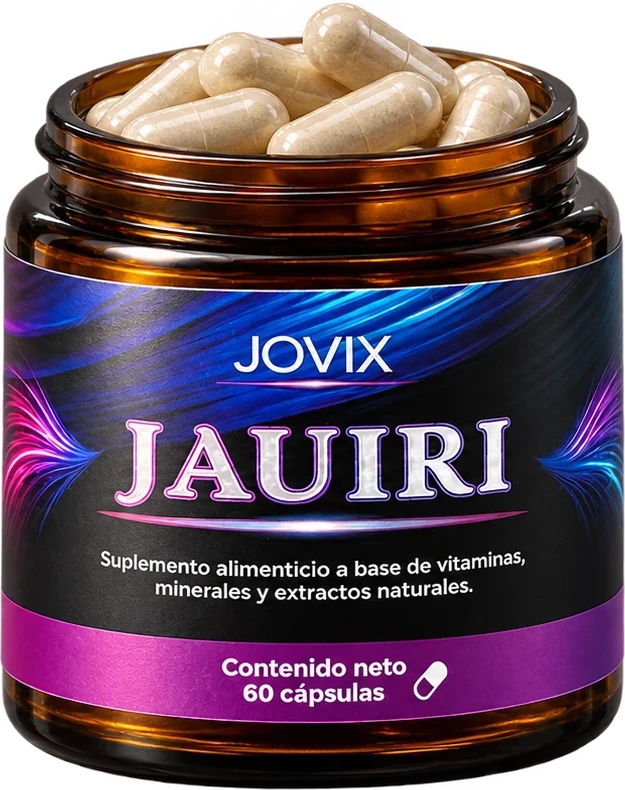
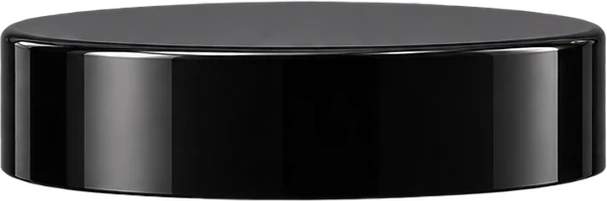
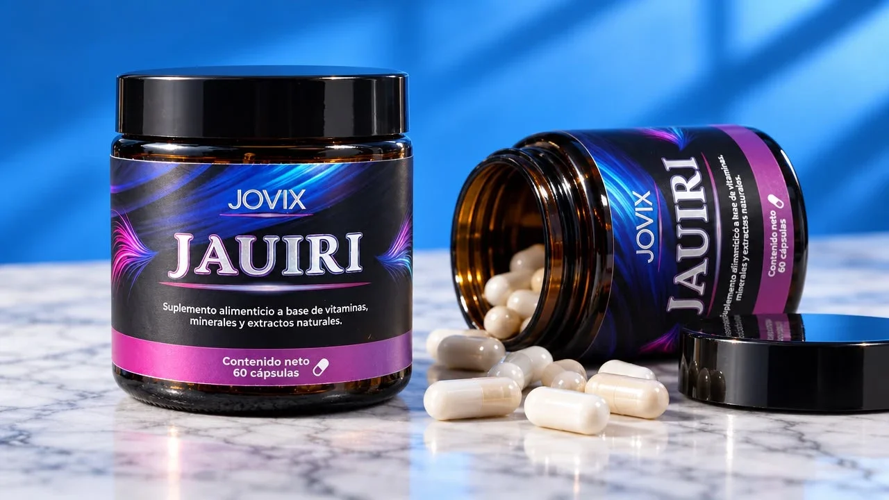
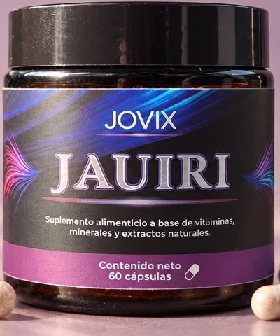

Cola de caballo
150 mgPlanta rica en silicio, mineral presente en la estructura del cabello y las uñas. Es el ingrediente principal de la fórmula.



Nutrición para tu cabello, desde la raíz.
Ocho nutrientes. Una sola cápsula.
Cada ingrediente tiene un trabajo.
Nutrición para tu cabello, desde la raíz.
Ocho nutrientes en una sola cápsula, diseñados por un tricólogo que quiere verte bien. Vitaminas, minerales aminoquelados y extractos naturales para un cabello fuerte, con brillo y con densidad.

El folículo es de los tejidos que más rápido se renuevan en el cuerpo, y por eso es de los primeros en notar el estrés, una mala racha de alimentación o una deficiencia. El resultado se ve: cabello más delgado, opaco o que se cae más de lo normal.
En consulta, el Dr. Cambrón ve esto todos los días. Jauiri reúne en una sola fórmula los nutrientes que tu folículo necesita para trabajar bien.
nutrientes activos en una sola cápsula
minerales en forma aminoquelada, de mejor absorción
cápsulas por frasco
meses: el tiempo que tarda un ciclo capilar en mostrar cambios
Sin relleno de marketing: estos son los ocho activos de Jauiri y lo que aporta cada uno a tu cabello.

Planta rica en silicio, mineral presente en la estructura del cabello y las uñas. Es el ingrediente principal de la fórmula.
La vitamina del cabello: contribuye al mantenimiento normal del cabello y la piel.
Participa en la señalización de las células y en el equilibrio metabólico, dos factores ligados a la salud del folículo.
Aminoácido con azufre que el cuerpo usa para formar queratina, la proteína de la que está hecho tu cabello.
Contribuye al mantenimiento normal del cabello y las uñas. En forma quelada, unido a aminoácidos, para absorberse mejor.
Antioxidante que contribuye al mantenimiento normal del cabello y protege a las células del daño oxidativo.
Interviene en el aprovechamiento de las proteínas y ayuda a regular la actividad hormonal.
Esencial para la división celular, el proceso con el que el folículo produce cabello nuevo.
Cantidades por porción. Porción: pendiente: número de cápsulas · Excipiente: celulosa microcristalina.
Jauiri nace en la consulta del Dr. Jorge Cambrón Barrales, médico especialista en tricología integral. Desde la medicina funcional, su trabajo es encontrar el porqué de cada caída. Jauiri lleva esa experiencia de consulta a una sola cápsula.
El cabello crece despacio. Lo que más importa es no saltarte días.
pendiente: cápsulas al día, de preferencia con alimentos.
Es el tiempo que tarda el ciclo del cabello en mostrar los cambios.
Si tu caída es intensa, combínalo con una valoración capilar para tratar la causa de fondo.
Sientes tu cabello más delgado, débil o sin brillo.
Notas más caída en temporadas de estrés o después de dietas.
Sigues un tratamiento capilar y quieres apoyarlo con nutrición.
Tus uñas se quiebran con facilidad.
Suplemento alimenticio a base de vitaminas, minerales y extractos naturales.
Te respondemos el mismo día para confirmar tu pedido y el envío.
El cabello tiene un ciclo lento. Recomendamos tomar Jauiri todos los días al menos 3 meses para evaluar el cambio en fuerza, brillo y caída.
Sí, la fórmula es para adultos, hombres y mujeres.
No. Jauiri es un apoyo nutricional. Si tu caída es intensa, repentina o lleva meses, lo ideal es una valoración capilar para encontrar la causa. Puedes agendarla con el Dr. Cambrón desde aquí.
En esos casos consulta primero a tu médico antes de empezar cualquier suplemento.
Por ahora, por WhatsApp: escríbenos con el botón de compra y te confirmamos disponibilidad, pago y envío el mismo día.
ESTE PRODUCTO NO ES UN MEDICAMENTO. EL CONSUMO DE ESTE PRODUCTO ES RESPONSABILIDAD DE QUIEN LO RECOMIENDA Y DE QUIEN LO USA.
Aviso de publicidad COFEPRIS: pendiente: número de aviso